import matplotlib.pyplot as plt
import numpy as np
import sympy as sy
import pandas as pd
from scipy.optimize import minimize
Introduction to Linear Regression and Linear Programming#
OBJECTIVES
Derive ordinary least squares models for data
Evaluate regression models using mean squared error
Examine errors and assumptions in least squares models
Use
scikit-learnto fit regression models to dataSet up linear programming problems with constraints using
scipy.optimize
Calculus Refresher#
An important idea is that of finding a maximum or minimum of a function. From calculus, we have the tools required. Specifically, a maximum or minimum value of a function \(f\) occurs wherever \(f'(x) = 0\) or is underfined. Consider the function:
def f(x): return x**2
x = np.linspace(-2, 2, 100)
plt.plot(x, f(x))
plt.grid()
plt.title(r'$f(x) = x^2$');
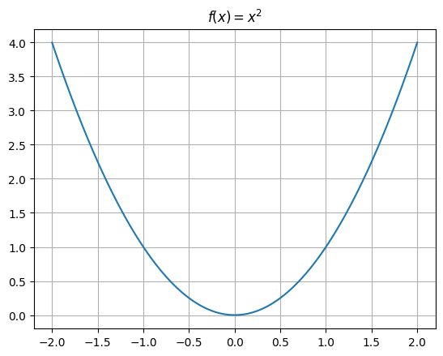
Here, using our power rule for derivatives of polynomials we have:
and are left to solve:
or
PROBLEM: Use minimize to determine where the function \(f(x) = (5 - 2x)^2\) has a minimum.
def f(x): return (5 - 2*x)**2
x = np.linspace(-2, 5, 100)
plt.plot(x, f(x))
plt.grid();
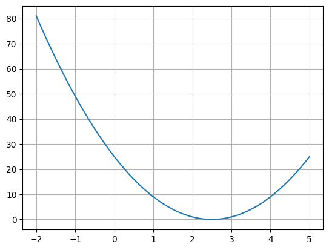
# minimize?
x0 = 0
# results = minimize()
# print(results.x)
Using the chain rule#
Example 1: Line of best fit
import seaborn as sns
tips = sns.load_dataset('tips')
tips.head()
| total_bill | tip | sex | smoker | day | time | size | |
|---|---|---|---|---|---|---|---|
| 0 | 16.99 | 1.01 | Female | No | Sun | Dinner | 2 |
| 1 | 10.34 | 1.66 | Male | No | Sun | Dinner | 3 |
| 2 | 21.01 | 3.50 | Male | No | Sun | Dinner | 3 |
| 3 | 23.68 | 3.31 | Male | No | Sun | Dinner | 2 |
| 4 | 24.59 | 3.61 | Female | No | Sun | Dinner | 4 |
sns.scatterplot(data = tips, x = 'total_bill', y = 'tip');

def y1(x): return .19*x
def y2(x): return .12*x
x = tips['total_bill']
plt.plot(x, y1(x), label = 'y1')
plt.plot(x, y2(x), label = 'y2')
plt.legend()
sns.scatterplot(data = tips, x = 'total_bill', y = 'tip')
plt.title('Which line is a better fit?')
plt.grid();
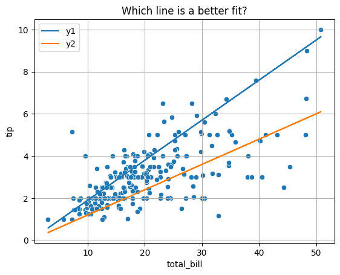
To decide between all possible lines we will examine the error in all these models and select the one that minimizes this error.
plt.plot(x, y2(x))
for i, yhat in enumerate(y2(x)):
plt.vlines(x = tips['total_bill'].iloc[i], ymin = yhat, ymax = tips['tip'].iloc[i], color = 'red', linestyle = '--')
sns.scatterplot(data = tips, x = 'total_bill', y = 'tip')
plt.title('Error in Model')
plt.grid();
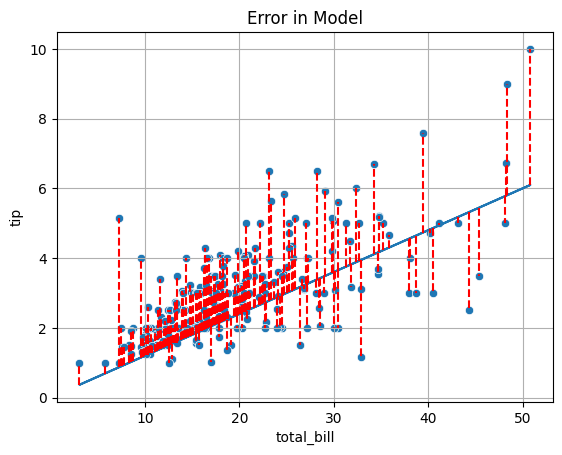
Mean Squared Error#
OBJECTIVE: Minimize mean squared error
def mse(beta):
return np.mean((y - beta*x)**2)
x = tips['total_bill']
y = tips['tip']
mse(.19)
2.185143996844262
mse(.12)
1.4430533029508197
PROBLEM
Use the array of slopes below to loop over each possible slope and determine which gives the lowest Mean Squared Error.
slopes = np.linspace(.1, .2, 11)
betas = np.linspace(0, .4, 100)
plt.plot(betas, [mse(beta) for beta in betas])
plt.xlabel(r'$\beta$')
plt.ylabel('MSE')
plt.title('Mean Squared Error for Different Slopes')
plt.grid();
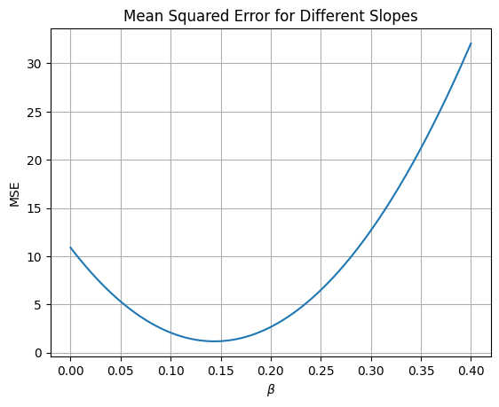
Using scipy#
To find the minimum of our objective function, the minimize function can again be used. It requires a function to be minimized and an intial guess.
Solving the Problem Exactly#
From calculus we know that the minimum value for a quadratic will occur where the first derivative equals zero. Thus, to determine the equations for the line of best fit, we minimize the MSE function with respect to \(\beta\).
np.sum(tips['total_bill']*tips['tip'])/np.sum(tips['total_bill']**2)
0.14373189527721666
Adding an intercept#
Consider the model:
where \(\epsilon = N(0, 1)\).
Now, the objective function changes to be a function in 3-Dimensions where the slope and intercept terms are input and mean squared error is the output.
def mse(betas):
return np.mean((y - (betas[0] + betas[1]*x))**2)
mse([4, 3])
4305.7986356557385
slopes = np.linspace(4, 5, 10)
intercepts = np.linspace(2, 3, 10)
for slope in slopes:
for intercept in intercepts:
print(f'Slope {slope: .2f}, Intercept: {intercept: .2f}, MSE: {mse([slope, intercept])}')
Slope 4.00, Intercept: 2.00, MSE: 1930.6791278688527
Slope 4.00, Intercept: 2.11, MSE: 2148.120884836066
Slope 4.00, Intercept: 2.22, MSE: 2377.1777444444447
Slope 4.00, Intercept: 2.33, MSE: 2617.8497066939894
Slope 4.00, Intercept: 2.44, MSE: 2870.1367715846995
Slope 4.00, Intercept: 2.56, MSE: 3134.038939116575
Slope 4.00, Intercept: 2.67, MSE: 3409.556209289617
Slope 4.00, Intercept: 2.78, MSE: 3696.6885821038245
Slope 4.00, Intercept: 2.89, MSE: 3995.436057559198
Slope 4.00, Intercept: 3.00, MSE: 4305.7986356557385
Slope 4.11, Intercept: 2.00, MSE: 1939.7078305606155
Slope 4.11, Intercept: 2.11, MSE: 2157.6381293209874
Slope 4.11, Intercept: 2.22, MSE: 2387.183530722526
Slope 4.11, Intercept: 2.33, MSE: 2628.3440347652295
Slope 4.11, Intercept: 2.44, MSE: 2881.1196414491
Slope 4.11, Intercept: 2.56, MSE: 3145.510350774134
Slope 4.11, Intercept: 2.67, MSE: 3421.516162740336
Slope 4.11, Intercept: 2.78, MSE: 3709.137077347703
Slope 4.11, Intercept: 2.89, MSE: 4008.373094596235
Slope 4.11, Intercept: 3.00, MSE: 4319.224214485935
Slope 4.22, Intercept: 2.00, MSE: 1948.7612246104027
Slope 4.22, Intercept: 2.11, MSE: 2167.180065163935
Slope 4.22, Intercept: 2.22, MSE: 2397.214008358632
Slope 4.22, Intercept: 2.33, MSE: 2638.8630541944963
Slope 4.22, Intercept: 2.44, MSE: 2892.127202671524
Slope 4.22, Intercept: 2.56, MSE: 3157.006453789719
Slope 4.22, Intercept: 2.67, MSE: 3433.500807549079
Slope 4.22, Intercept: 2.78, MSE: 3721.6102639496057
Slope 4.22, Intercept: 2.89, MSE: 4021.334822991298
Slope 4.22, Intercept: 3.00, MSE: 4332.674484674156
Slope 4.33, Intercept: 2.00, MSE: 1957.839310018215
Slope 4.33, Intercept: 2.11, MSE: 2176.746692364906
Slope 4.33, Intercept: 2.22, MSE: 2407.269177352763
Slope 4.33, Intercept: 2.33, MSE: 2649.4067649817853
Slope 4.33, Intercept: 2.44, MSE: 2903.1594552519737
Slope 4.33, Intercept: 2.56, MSE: 3168.527248163327
Slope 4.33, Intercept: 2.67, MSE: 3445.5101437158464
Slope 4.33, Intercept: 2.78, MSE: 3734.1081419095317
Slope 4.33, Intercept: 2.89, MSE: 4034.3212427443837
Slope 4.33, Intercept: 3.00, MSE: 4346.149446220401
Slope 4.44, Intercept: 2.00, MSE: 1966.9420867840518
Slope 4.44, Intercept: 2.11, MSE: 2186.3380109239015
Slope 4.44, Intercept: 2.22, MSE: 2417.349037704918
Slope 4.44, Intercept: 2.33, MSE: 2659.9751671271
Slope 4.44, Intercept: 2.44, MSE: 2914.216399190447
Slope 4.44, Intercept: 2.56, MSE: 3180.07273389496
Slope 4.44, Intercept: 2.67, MSE: 3457.5441712406387
Slope 4.44, Intercept: 2.78, MSE: 3746.630711227484
Slope 4.44, Intercept: 2.89, MSE: 4047.3323538554946
Slope 4.44, Intercept: 3.00, MSE: 4359.649099124672
Slope 4.56, Intercept: 2.00, MSE: 1976.0695549079135
Slope 4.56, Intercept: 2.11, MSE: 2195.9540208409226
Slope 4.56, Intercept: 2.22, MSE: 2427.4535894150986
Slope 4.56, Intercept: 2.33, MSE: 2670.568260630439
Slope 4.56, Intercept: 2.44, MSE: 2925.2980344869466
Slope 4.56, Intercept: 2.56, MSE: 3191.6429109846176
Slope 4.56, Intercept: 2.67, MSE: 3469.6028901234567
Slope 4.56, Intercept: 2.78, MSE: 3759.1779719034603
Slope 4.56, Intercept: 2.89, MSE: 4060.36815632463
Slope 4.56, Intercept: 3.00, MSE: 4373.173443386967
Slope 4.67, Intercept: 2.00, MSE: 1985.2217143897997
Slope 4.67, Intercept: 2.11, MSE: 2205.594722115969
Slope 4.67, Intercept: 2.22, MSE: 2437.5828324833033
Slope 4.67, Intercept: 2.33, MSE: 2681.1860454918037
Slope 4.67, Intercept: 2.44, MSE: 2936.4043611414695
Slope 4.67, Intercept: 2.56, MSE: 3203.2377794323006
Slope 4.67, Intercept: 2.67, MSE: 3481.686300364298
Slope 4.67, Intercept: 2.78, MSE: 3771.7499239374615
Slope 4.67, Intercept: 2.89, MSE: 4073.428650151791
Slope 4.67, Intercept: 3.00, MSE: 4386.722479007286
Slope 4.78, Intercept: 2.00, MSE: 1994.3985652297108
Slope 4.78, Intercept: 2.11, MSE: 2215.2601147490386
Slope 4.78, Intercept: 2.22, MSE: 2447.7367669095324
Slope 4.78, Intercept: 2.33, MSE: 2691.828521711192
Slope 4.78, Intercept: 2.44, MSE: 2947.535379154018
Slope 4.78, Intercept: 2.56, MSE: 3214.8573392380076
Slope 4.78, Intercept: 2.67, MSE: 3493.794401963165
Slope 4.78, Intercept: 2.78, MSE: 3784.3465673294872
Slope 4.78, Intercept: 2.89, MSE: 4086.5138353369757
Slope 4.78, Intercept: 3.00, MSE: 4400.29620598563
Slope 4.89, Intercept: 2.00, MSE: 2003.600107427646
Slope 4.89, Intercept: 2.11, MSE: 2224.950198740134
Slope 4.89, Intercept: 2.22, MSE: 2457.9153926937865
Slope 4.89, Intercept: 2.33, MSE: 2702.495689288606
Slope 4.89, Intercept: 2.44, MSE: 2958.69108852459
Slope 4.89, Intercept: 2.56, MSE: 3226.5015904017396
Slope 4.89, Intercept: 2.67, MSE: 3505.927194920056
Slope 4.89, Intercept: 2.78, MSE: 3796.9679020795384
Slope 4.89, Intercept: 2.89, MSE: 4099.6237118801855
Slope 4.89, Intercept: 3.00, MSE: 4413.894624322
Slope 5.00, Intercept: 2.00, MSE: 2012.8263409836065
Slope 5.00, Intercept: 2.11, MSE: 2234.664974089254
Slope 5.00, Intercept: 2.22, MSE: 2468.1187098360656
Slope 5.00, Intercept: 2.33, MSE: 2713.1875482240443
Slope 5.00, Intercept: 2.44, MSE: 2969.871489253188
Slope 5.00, Intercept: 2.56, MSE: 3238.1705329234965
Slope 5.00, Intercept: 2.67, MSE: 3518.0846792349726
Slope 5.00, Intercept: 2.78, MSE: 3809.6139281876135
Slope 5.00, Intercept: 2.89, MSE: 4112.75827978142
Slope 5.00, Intercept: 3.00, MSE: 4427.517734016393
minimize(mse, [5, 3])
message: Optimization terminated successfully.
success: True
status: 0
fun: 1.0360194420115216
x: [ 9.203e-01 1.050e-01]
nit: 5
jac: [-5.960e-08 -8.643e-07]
hess_inv: [[ 2.980e+00 -1.253e-01]
[-1.253e-01 6.334e-03]]
nfev: 18
njev: 6
betas = minimize(mse, [0, 0]).x
def lobf(x): return betas[0] + betas[1]*x
plt.scatter(x, y)
plt.plot(x, lobf(x), color = 'red')
plt.grid()
plt.title('Line of Best fit with slope and intercept');
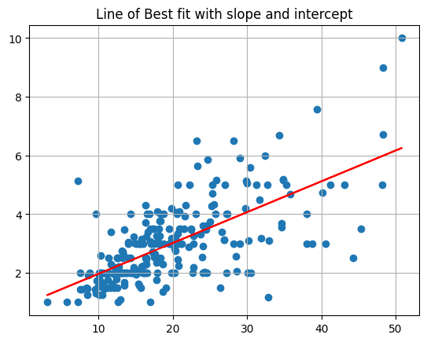
Using scikit-learn#
The scikit-learn library has many predictive models and modeling tools. It is a popular library in industry for Machine Learning tasks. docs
# !pip install -U scikit-learn
credit = pd.read_csv('https://raw.githubusercontent.com/jfkoehler/nyu_bootcamp_fa25/refs/heads/main/data/Credit.csv', index_col=0)
credit.head()
| Income | Limit | Rating | Cards | Age | Education | Gender | Student | Married | Ethnicity | Balance | |
|---|---|---|---|---|---|---|---|---|---|---|---|
| 1 | 14.891 | 3606 | 283 | 2 | 34 | 11 | Male | No | Yes | Caucasian | 333 |
| 2 | 106.025 | 6645 | 483 | 3 | 82 | 15 | Female | Yes | Yes | Asian | 903 |
| 3 | 104.593 | 7075 | 514 | 4 | 71 | 11 | Male | No | No | Asian | 580 |
| 4 | 148.924 | 9504 | 681 | 3 | 36 | 11 | Female | No | No | Asian | 964 |
| 5 | 55.882 | 4897 | 357 | 2 | 68 | 16 | Male | No | Yes | Caucasian | 331 |
from sklearn.linear_model import LinearRegression
PROBLEM: Which feature is the strongest predictor of Balance in the data?
sns.heatmap(credit.corr(numeric_only = True), annot = True)
<Axes: >
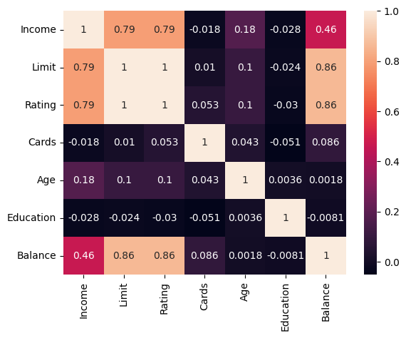
#define X as the feature most correlated with Balance
#and y as Balance
PROBLEM: Build a LinearRegression model, determine the Root Mean Squared Error and interpret the slope and intercept.
Instantiate
Fit
Predict/score
#instantiate
#fit
#look at coefficient and intercept
#examine the distribution of errors -- want normal centered at 0
from sklearn.metrics import mean_squared_error
#make predictions
#error between true and predicted
Problem: Determine \(\alpha\) and \(\beta\) of an investment#
Consider an investment with return of the market as \(R_M\) (say the S&P) and the return of a stock \(R\) over the same time period.
import yfinance as yf
data = yf.download(["NVDA", "SPY"], period="5y")
data.head()
Failed to get ticker 'SPY' reason: Expecting value: line 1 column 1 (char 0)
Failed to get ticker 'NVDA' reason: Expecting value: line 1 column 1 (char 0)
[*********************100%***********************] 1 of 2 completed
2 Failed downloads:
['NVDA', 'SPY']: JSONDecodeError('Expecting value: line 1 column 1 (char 0)')
| Price | Adj Close | Close | High | Low | Open | Volume | ||||||
|---|---|---|---|---|---|---|---|---|---|---|---|---|
| Ticker | NVDA | SPY | NVDA | SPY | NVDA | SPY | NVDA | SPY | NVDA | SPY | NVDA | SPY |
| Date | ||||||||||||
data.info()
<class 'pandas.core.frame.DataFrame'>
DatetimeIndex: 0 entries
Data columns (total 12 columns):
# Column Non-Null Count Dtype
--- ------ -------------- -----
0 (Adj Close, NVDA) 0 non-null float64
1 (Adj Close, SPY) 0 non-null float64
2 (Close, NVDA) 0 non-null float64
3 (Close, SPY) 0 non-null float64
4 (High, NVDA) 0 non-null float64
5 (High, SPY) 0 non-null float64
6 (Low, NVDA) 0 non-null float64
7 (Low, SPY) 0 non-null float64
8 (Open, NVDA) 0 non-null float64
9 (Open, SPY) 0 non-null float64
10 (Volume, NVDA) 0 non-null float64
11 (Volume, SPY) 0 non-null float64
dtypes: float64(12)
memory usage: 0.0 bytes
[*********************100%***********************] 1 of 2 completed
close = data.iloc[:, [0, 1]]
close.pct_change().plot()
<Axes: xlabel='Date'>
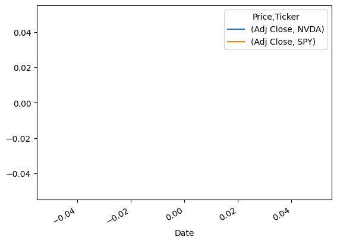
returns = close.pct_change()
sns.regplot(x = returns.iloc[:, 1], y = returns.iloc[:, 0], scatter_kws={'alpha': 0.3})
plt.xlabel('SPY Close Pct Change')
plt.ylabel('NVDA Close Pct Change')
plt.grid();
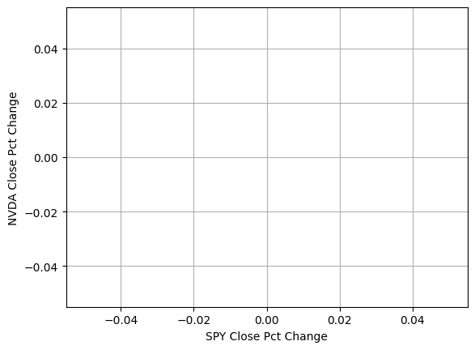
#instantiate
#fit
#examine our alpha and beta
Problem#
Load in the california housing data from the sample_data folder in colab. Use this data to build a regression model with:
The most correlated feature to housing prices as input and price as target
The five features you believe would be most important
Which model has a lower MSE?
Linear Programming: An example#
A dog daycare feeds the dogs a diet that requires a minimum of 15 grams of fiber, 30 grams of protein. Each pound of chick peas contains 1 gram of protein, 5 grams of fiber, and 25 grams of fat. Cottage cheese contains 2 grams of protein, 1 gram of fiber, and 14 grams of fat. Suppose that chick peas are priced at 8 USD per pound, and cottage cheese at 6 USD per pound. The nutritionist claims the dogs will not eat more than 285 grams of fat. Your goal is to obtain the most economical solution given these constraints.
This is summarized in the table below:
ingredient |
protein |
fiber |
fat |
cost |
|---|---|---|---|---|
chick peas |
1 g |
5 g |
25 g |
$8 |
cottage cheese |
2 g |
1 g |
14 g |
$6 |
minimum |
15 g |
30 g |
||
maximum |
285 g |
Mathematically, the objective function is:
where \(x\) = chick peas and \(y\) = cottage cheese. This is the total cost of the combination of chick peas and cottage cheese.
We will save the coefficients as a list for use later.
c = [6, 8]
Because each pound of chick peas contains 1 gram of protein and each cottage cheese 2 grams, and know this needs to combine to at least 15 grams you have:
As for cottage cheese, you have:
As for the fat content, you have:
Further, the amount of \(x\) and \(y\) must not be negative.
Graphical representation#
To visualize the solution, you can imagine each of the constraints as a region. First, functions for these are defined and plotted together.
def cp(x): #chick peas
return -2*x + 15
def cc(x): #cottage cheese
return -1/5*x + 30/5
def fat(x): #fat
return -14/25*x + 285/25
y = 0
x = np.linspace(0, 30, 100)
d = np.linspace(0, 30, 1000)
x, y = np.meshgrid(d, d)
plt.imshow((y > cp(x)) & (y < fat(x)) & (y > cc(x)).astype('int'),
origin = 'lower',
cmap = 'Greys',
extent=(x.min(), x.max(), y.min(), y.max()),
alpha = 0.4)
plt.plot(d, cc(d), '-', color = 'black', label = 'cottage cheese')
plt.plot(d, cp(d), '-', color = 'blue', label = 'chick peas')
plt.plot(d, fat(d), '-', color = 'red', label = 'fat')
plt.ylim(0, 15)
plt.xlim(0, 20)
plt.title('Feasible region for dog food problem')
plt.grid();
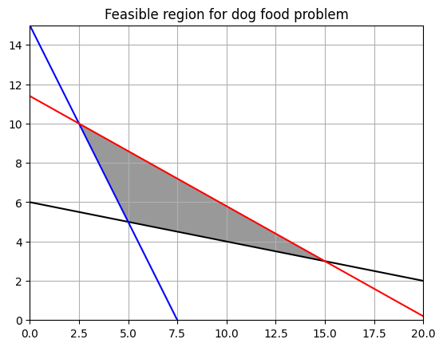
The form of all solutions can be found by rewriting the objective function as:
Below, different values of \(C\) are plotted against the original region. Note that the objective function will obtain its maximum and minimum values at the vertices of the polygon. Hence, to solve the problem, you need only look to the vertices. These are highlighted in the plot on the right.
# fig, ax = plt.subplots(1, 2, figsize = (30, 10))
for i in range(10, 1000, 10):
plt.plot(d, -6/8*d + i/8, '--', color = 'black')
plt.plot(d, -6/8*d + i, '--', color = 'black', label = 'slopes of -6/8 + c/8')
d = np.linspace(0, 30, 1000)
x, y = np.meshgrid(d, d)
plt.imshow((y > cp(x)) & (y < fat(x)) & (y > cc(x)).astype('int'),
origin = 'lower',
cmap = 'Greys',
extent=(x.min(), x.max(), y.min(), y.max()),
alpha = 0.4)
plt.plot(d, cc(d), '-', color = 'black', label = 'cottage cheese')
plt.plot(d, cp(d), '-', color = 'blue', label = 'chick peas')
plt.plot(d, fat(d), '-', color = 'red', label = 'fat')
plt.ylim(0, 15)
plt.xlim(0, 20)
plt.title('Feasible region for dog food problem\nwith possible cost lines')
plt.grid()
plt.legend();
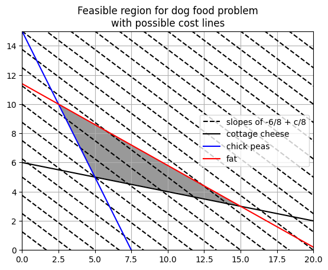
d = np.linspace(0, 30, 1000)
x, y = np.meshgrid(d, d)
plt.imshow((y > cp(x)) & (y < fat(x)) & (y > cc(x)).astype('int'),
origin = 'lower',
cmap = 'Greys',
extent=(x.min(), x.max(), y.min(), y.max()),
alpha = 0.4)
plt.plot(d, cc(d), '-', color = 'black', label = 'cottage cheese')
plt.plot(15, 3, 'ro', label = 'possible solutions')
plt.plot(d, cp(d), '-', color = 'blue', label = 'chick peas')
plt.plot(d, fat(d), '-', color = 'red', label = 'fat')
plt.ylim(0, 15)
plt.xlim(0, 20)
plt.title('Feasible region for dog food problem')
plt.grid()
plt.plot(5, 5, 'ro')
plt.plot(5/2, 10, 'ro')
plt.legend();
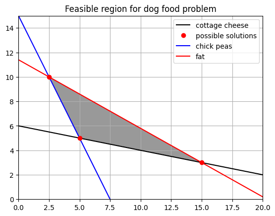
using linprog#
To solve the problem using python, scipy.optimize contains the linprog function that will solve this problem. The one exception is that the greater than inequality constraints need to be converted to less thans by multiplying both sides by -1.
#cost coeffients
c = [6, 8]
#coefficients of less than problems
A = [[-2, -1], [-1, -5], [14, 25]]
#right side of inequalities
b = [-15, -30, 285]
res = optim.linprog(c, A, b)
res
message: Optimization terminated successfully. (HiGHS Status 7: Optimal)
success: True
status: 0
fun: 70.0
x: [ 5.000e+00 5.000e+00]
nit: 2
lower: residual: [ 5.000e+00 5.000e+00]
marginals: [ 0.000e+00 0.000e+00]
upper: residual: [ inf inf]
marginals: [ 0.000e+00 0.000e+00]
eqlin: residual: []
marginals: []
ineqlin: residual: [ 0.000e+00 0.000e+00 9.000e+01]
marginals: [-2.444e+00 -1.111e+00 -0.000e+00]
mip_node_count: 0
mip_dual_bound: 0.0
mip_gap: 0.0
EXAMPLE
Suppose we have the opportunity to invest in four projects with given cash flows, net present value, and profitability index (\(\frac{NPV}{\text{investment}}\)) given below.
PROJECT |
\(C_0\) |
\(C_1\) |
\(C_2\) |
NPV at 10% |
Profitability Index |
|---|---|---|---|---|---|
A |
-10 |
-30 |
5 |
21 |
2.1 |
B |
-5 |
5 |
2 |
16 |
3.2 |
C |
-5 |
5 |
15 |
12 |
2.4 |
D |
0 |
-40 |
60 |
13 |
0.4 |
CONSTRAINTS
Cash flows for period 0 must not be greater than 10 million.
Total outflow in period 1 must not be greater than 10 million.
Finally the amount of the investment must be positive and we cannot purchase more than one of each.
from scipy.optimize import linprog
coefs = [-21, -16, -12, -13]
constr = [[10, 5, 5, 0],
[-30, -5, -5, 40]]
right_side = [10, 10]
bounds = [(0, 1), (0, 1), (0, 1), (0, 1)]
linprog(coefs, constr, right_side, bounds = bounds)
message: Optimization terminated successfully. (HiGHS Status 7: Optimal)
success: True
status: 0
fun: -36.25
x: [ 5.000e-01 1.000e+00 0.000e+00 7.500e-01]
nit: 2
lower: residual: [ 5.000e-01 1.000e+00 0.000e+00 7.500e-01]
marginals: [ 0.000e+00 0.000e+00 1.750e+00 0.000e+00]
upper: residual: [ 5.000e-01 0.000e+00 1.000e+00 2.500e-01]
marginals: [ 0.000e+00 -2.250e+00 0.000e+00 0.000e+00]
eqlin: residual: []
marginals: []
ineqlin: residual: [ 0.000e+00 0.000e+00]
marginals: [-3.075e+00 -3.250e-01]
mip_node_count: 0
mip_dual_bound: 0.0
mip_gap: 0.0